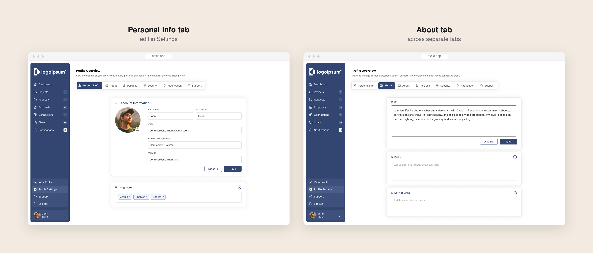
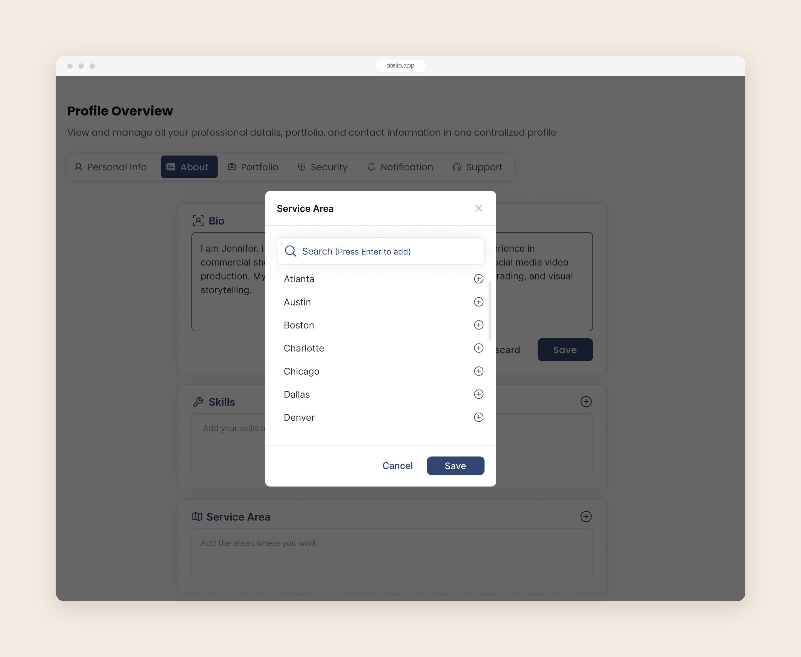
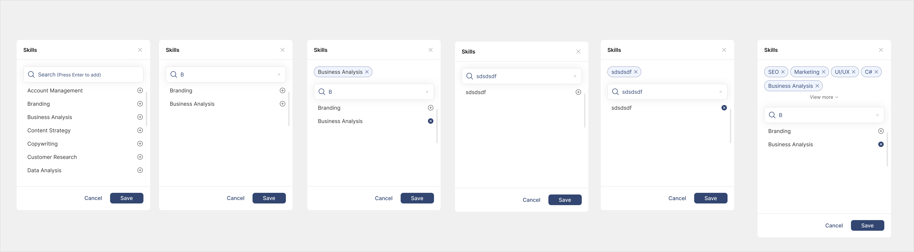
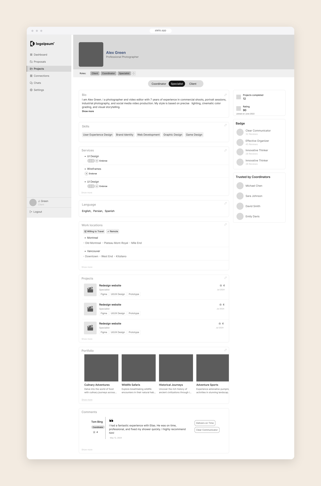
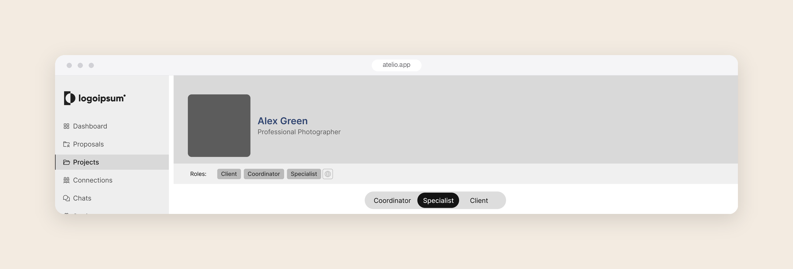

Context
On Atelio, specialists, coordinators and clients each have a profile with their bio, skills, services, languages and work. For specialists especially, the profile is how they get recommended and chosen, so filling it in had to be easy.
What I got wrong the first time
The profile was my first larger design on the project, and it launched like this:
- Editing and viewing lived in different places. To fill in their profile, users went to Settings and moved between separate tabs: Personal Info, About, Portfolio and more. To see how their profile looked, they had to leave Settings and click their photo in the sidebar.
- Every skill needed a popup. To add a skill, a language or a service area, users opened a popup, typed, and closed it to see the new chip on the page.
- Too much empty space. The layout spread a small amount of content across a lot of white space, so users scrolled more than they needed to.


The popup itself was carefully designed. It covered searching, selecting, removing, and adding a value that wasn't in the list yet. The problem wasn't the popup's states; it was the extra steps around it.

What we learned after launch
After launch, we saw that the way users worked with their profile was different from what they expected. People come with a mental model from the platforms they already use, and my design didn't match it.
Looking at how others solve it
I looked at how LinkedIn, Jobvision and Jobinja handle profiles, since our users already know them, and followed a similar approach: the profile itself is where you see and edit your information.
The redesign
One page to view and edit. Clicking their name in the sidebar takes users to their profile. Each section can be edited right there, so people see the result of every change immediately, without switching between Settings and a separate view. I also added the information the profile was missing.
No more popups. Skills, languages and service areas are added inline. As users type, the new chip appears on the page, and they can remove it right there. Changes are saved as they make them.
Less scrolling. A tighter layout with less empty space puts more of the profile on screen at once.

One person, several roles
A later request from the business added a new challenge. At first, each role had its own profile and its own sign-in. Now one person could hold several roles, for example a specialist who is also a client, and each role has its own profile information.
I added a role switch at the top of the profile, so people can move between their roles in one place and see the profile for each one.

Outcome
The redesign was delivered as wireframes. The engagement ended before it was implemented, so there is no data from real users.
What I learned
- Design for what users already know. People arrive with habits from the platforms they use every day.
- Edit where the result is visible. Separating editing from viewing made every change a guess. When people see the result as they edit, they make fewer round trips and trust the page more.
- Every extra step has a cost. A well-designed popup is still an extra step. Removing it did more for the experience than polishing it.
- White space should group, not spread. Too much empty space made the profile longer without making it clearer. A tighter layout meant less scrolling.